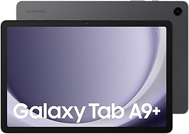

Lenovo Tab M11 – Tablette Tactile 11'' WUXGA Puissante et Polyvalente
Découvrez la Lenovo Tab M11, une tablette tactile 11 pouces au format WUXGA idéale pour le divertissement, la productivité et la mobilité. Équipée d’un processeur MediaTek Helio G88 à 8 cœurs, 4 Go de RAM et 128 Go de stockage eMMC, elle offre des performances fluides sous Android 13.
Parfaite pour le multimédia, la lecture, la navigation et la prise de notes avec son stylet Tab Pen (vendu séparément). Son design élégant en gris allie style et praticité.
📦 Ce que cette tablette vous offre :
🔋 Processeur performant MediaTek Helio G88 8 cœurs pour une expérience rapide
🖥️ Écran 11'' WUXGA pour une image nette et confortable
💾 4 Go RAM et 128 Go eMMC pour stocker toutes vos applications et fichiers
📱 Android 13 avec connectivité WiFi et Bluetooth intégrée
✍️ Compatible Tab Pen pour la créativité et la productivité
➡️ Un compagnon idéal pour vos loisirs et votre travail en mobilité.
Voir l'offre

Lenovo Tab Plus 11.5’’ – Tablette Tactile 2K Full HD Puissante et Immersive
Découvrez la Lenovo Tab Plus 11.5 pouces, une tablette tactile avec écran 2K Full HD qui offre une qualité d’image exceptionnelle et un son immersif grâce à la technologie Dolby Atmos et les haut-parleurs JBL intégrés. Équipée du processeur Mediatek G99, 8 Go de RAM et 128 Go de stockage eMMC, elle assure fluidité et rapidité sous Android 14.
Parfaite pour le divertissement, la productivité et la créativité, avec une connectivité WiFi et Bluetooth avancée dans un design élégant Luna Grey.
📦 Ce que cette tablette vous apporte :
🖥️ Écran 11.5’’ 2K Full HD pour une image claire et détaillée
🔊 Son Dolby Atmos avec haut-parleurs JBL pour une expérience audio immersive
⚡ Processeur Mediatek G99 et 8 Go RAM pour une performance optimale
💾 Stockage 128 Go eMMC pour garder toutes vos applications et fichiers
📱 Android 14 avec WiFi et Bluetooth intégrés pour une connectivité complète
🎨 Design Luna Grey élégant et moderne
➡️ La tablette idéale pour profiter pleinement de vos contenus multimédia et rester productif en toute mobilité.
Voir l'offre

Samsung X210N Galaxy Tab A9+ 11
Découvrez la Xiaomi Redmi Pad Pro, une tablette au design fin et moderne, équipée d’un écran 12,1 pouces (30,5 cm) offrant une expérience visuelle immersive. Avec sa mémoire 6 Go RAM et son stockage de 128 Go, elle est idéale pour le divertissement, la productivité et la mobilité. Classée en efficacité énergétique A, elle allie performance et économie d’énergie pour une utilisation prolongée.
📦 Ce que cette tablette vous offre :
🌟 Grand écran 12,1" pour une image nette et colorée
⚡ 6 Go de RAM pour une navigation fluide et multitâche efficace
💾 Stockage généreux de 128 Go pour toutes vos applications, photos et vidéos
🔋 Classe énergétique A pour une meilleure autonomie et respect de l’environnement
🎨 Design élégant en bleu, parfait pour un usage quotidien mobile
➡️ La Xiaomi Redmi Pad Pro est parfaite pour ceux qui veulent allier puissance, confort visuel et mobilité dans une tablette compacte.
Voir l'offre

Laptop Ultra Fin Acer Aspire Go 14 AG14-31P-3142 – Performance et Mobilité au Quotidien
Découvrez l’Acer Aspire Go 14, un ordinateur portable 14 pouces avec écran WUXGA IPS qui allie élégance, légèreté et puissance. Équipé d’un processeur Intel Core i3-N305, de 8 Go de RAM et d’un SSD rapide de 512 Go, ce laptop est conçu pour répondre efficacement à vos besoins professionnels et personnels, tout en offrant une excellente qualité d’affichage.
Son clavier AZERTY français et son design gris moderne en font un compagnon idéal pour le travail, les études et les loisirs, où que vous soyez.
📦 Ce que vous offre l’Acer Aspire Go 14 :
🔍 Écran 14" WUXGA IPS pour des images claires, nettes et des couleurs précises
⚡ Processeur Intel Core i3-N305 performant pour une utilisation multitâche fluide
💾 8 Go de RAM et SSD de 512 Go pour un stockage rapide et une réactivité optimale
🔌 Graphiques Intel UHD intégrés pour une expérience visuelle agréable au quotidien
⌨️ Clavier AZERTY français confortable pour une saisie efficace
🧳 Design ultra fin et léger, parfait pour la mobilité et le transport
➡️ Un laptop polyvalent qui combine puissance, portabilité et style pour accompagner toutes vos journées.
Voir l'offre

Casque Gaming XYZ – Son Immersif & Confort Exceptionnel
Plonge dans l’univers du gaming avec le JBL Quantum 100N, un casque filaire circum-auriculaire conçu pour offrir une immersion totale. Grâce à la technologie QuantumSURROUND Signature et au Windows Sonic Spatial Sound, chaque bruit devient une expérience réaliste et précise.
Son micro amovible te permet de communiquer clairement avec tes coéquipiers ou de le retirer pour une session solo plus tranquille. Confortable même après plusieurs heures de jeu, ce casque est compatible avec toutes les plateformes : PC, Xbox, PlayStation, Switch, et plus encore.
💡 Pourquoi choisir ce casque :
🔊 Son spatial immersif pour une expérience de jeu inégalée
🎤 Micro détachable pour plus de flexibilité
🎮 Compatibilité multiplateforme
🪶 Confort durable, parfait pour les longues sessions
🎨 Design rouge et bleu stylé et dynamique
➡️ Parfait pour les gamers exigeants qui veulent allier performance, style et confort.
Voir l'offre

Laptop Ultra Fin – Grand Écran & Performance Essentielle
Découvrez le Acer Aspire 3 A317-55P-C8DB, un ordinateur portable élégant et pratique conçu pour répondre à vos besoins quotidiens. Doté d’un grand écran 17,3†Full HD IPS, ce laptop offre un excellent confort visuel, idéal pour le travail, le streaming ou la navigation.
Propulsé par un processeur Intel Celeron N100, avec 4 Go de RAM et un SSD rapide de 128 Go, il assure une utilisation fluide pour vos tâches bureautiques, vos cours en ligne ou vos divertissements. Sa carte graphique Intel UHD permet une belle qualité d’image, tandis que le clavier AZERTY complet assure un confort de frappe optimal.
💼 Caractéristiques clés :
📺 Écran 17,3” Full HD IPS – grande taille et excellente clarté
⚙️ Processeur Intel Celeron N100 – idéal pour une utilisation quotidienne
🚀 SSD 128 Go – démarrage rapide et stockage sécurisé
💻 Windows 11 Famille préinstallé – expérience moderne et fluide
🎨 Design gris sobre et raffiné – parfait pour le bureau ou la maison
➡️ Un laptop au bon rapport qualité/prix, pour ceux qui cherchent un ordinateur fiable, fonctionnel et agréable à utiliser au quotidien.
Voir l'offre